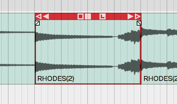
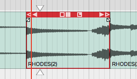
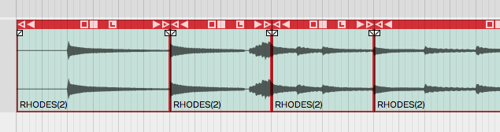
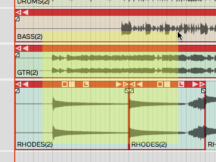
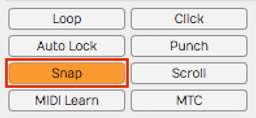
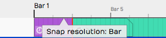
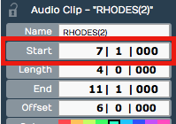
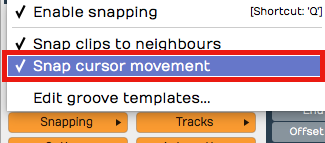
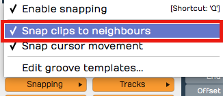
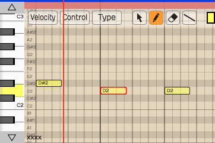

Selecting and Snapping¶
In this chapter, we start working with clips. The examples focus on Audio Clips and MIDI Clips. Keep in mind that most of these techniques also apply to Step clips, Edit clips, and markers.
First, you'll learn how to select clips and groups of clips. Then, you will learn about the snap-to-grid functions. Snap-to-grid makes it easy to align clips to the bars and beats of your song. Let's get started with selecting clips.
Selecting a Clip¶
To select a clip, simply click on the clip. The clip is highlighted and its properties appear in the Actions panel.

A Selected Clip
Auditioning a Clip¶
To audition a clip, double-click and you will hear it play back, starting at the spot where you have double-clicked. Click within the clip to jump to a new spot as playback continues. Click anywhere outside the clip and the auditioning will stop. Moving pointers above and below the clip indicate the playback position.

Audio Clip Being Auditioned
Auditioning essentially solos the clip; everything else within the Edit is muted in this mode.
Selecting Multiple Clips¶
To select more than one clip, hold down Cmd / Ctrl then click on each clip that you want to add to the selection.

Multiple Clips Selection
Once you have multiple clips selected, you can perform operations on them as a group, such as moving them by dragging, duplicating, or deleting them. We'll cover more about clip editing operations in Basic Audio Editing. To clear a multiple selection, simply press the Esc key.
Another way to make a multiple selection is to use the lasso tool. Here's how that works:

Multiple Selection with Lasso
- Hold down Opt / Alt until you see a plus cursor.
- Now as you drag, the cursor draws a yellow box.
- Anything the yellow box touches gets selected.
💡 Tip: You can further customize a multiple selection by holding down Cmd / Ctrl then click any clip you want to de-select.
Shift Selecting Clips¶
Waveform also supports Shift-select. This is a quick way to select a contiguous range of clips. Here's how:
- Select the first clip.
- Hold down Shift and select the last clip. This will select the first clip, the last clip, and all the clips in between.
Shift-select works for clips on a single track, and even across multiple tracks.
💡 Tip: Shift-select also works for many other kinds of Waveform objects including Browser lists and tracks.
Deselecting Clips¶
You can always press Esc to deselect everything.
💡 Tip: Pressing Esc also works to clear selections of other objects in Waveform like plugins and tracks.
Using Snap-to-Grid¶
Snap-to-grid makes aligning clips and notes to musical time accurate and efficient. Working with this powerful feature is crucial to using Waveform for editing audio and MIDI.
Enable/Disable Snap-to-Grid¶
To toggle snap-to-grid on or off, click on the Snap button (Q) in the transport bar. When snap-to-grid is enabled the Snap button appears highlighted.

Snap button in the transport bar
Pressing Q also toggles Snap on and off. You can also control the snapping state from the menu section - Snapping > Enable snapping.
💡 Tip: Remember the keyboard shortcut Q is short for quantize. Snap-to-grid is a form of quantizing. If you don't like that shortcut, you can always remap it to another key.
About Snap Resolution¶
The snap resolution is dependent on the zoom level. If you're zoomed way out, the snap resolution might be one bar. The more you zoom in, the snap resolution gets finer and finer.

Hover Over Timeline to See Snap Resolution
💡 Tip: You can always see what your current snap resolution is by hovering the mouse pointer over the Timeline. A tooltip appears showing, Snap resolution bar, Snap resolution beat, or Half beat for example.
Snapping Clips to the Grid¶
As you drag a clip, it snaps to the grid increments. If you want to see exactly where it's snapping, look at the Start parameter in properties. Snap-to-grid makes it easy to align a clip to a bar or beat of the music.

Clip properties Start**
📝 Note: Snap-to-grid is an alignment of the beginning of a clip to a grid line. Notice that snapping also applies to editing functions like trimming.
Snapping the Cursor to the Grid¶
Snapping may affect how the cursor is positioned depending on another setting. Turn on Snapping > Snap cursor movement and the cursor position will snap to the grid. Remember that the snap resolution is determined by the zoom level.

caption
To test this, zoom out so that the snap resolution is "Beat." Now move the cursor around and it will obviously snap to the nearest beat.
💡 Tip: To get clear indication of exactly where the cursor is, look at the time display in the transport bar.
Snapping Clips to Other Clips¶
Another snap behavior is to Snap clips to neighbors. With Snap clips to neighbors off, clips snap to the grid normally. However, with Snapping > Snap clips to neighbors turned on, clips snap to other clips. It seems as if they are magnetically attracted to each other. This is useful for any editing where you want to arrange clips end-to-end, for example when editing voiceover tracks.

Snap Clips to Neighbours Option
💡 Tip: A problem with Snap clips to neighbors is that you need to have snapping enabled for it work. To snap clips to other clips with with snap-to-grid disabled, just hold down Opt / Alt as you drag. This is really the best way to arrange clips end to end!
Overriding Snap-to-Grid¶
Temporarily override snap-to-grid by holding down Cmd / Ctrl. Using this modifier, you can freely position clips without first turning off Snap.
Nudging Clips¶
To move clips using the keyboard, select a clip then press Shift + Right Arrow or Shift + Left Arrow. The nudge action moves the clip by one grid increment. You can also move clips track to track using nudge. To nudge clips track to track, use Shift + Up Arrow and Shift + Down Arrow.
You can use nudging when moving large selections of clips over, to add a song section or make room for an intro.
📝 Note: Nudging works the same whether snapping is on or off. The nudge move is by the grid increment.
Nudging Notes¶
Snapping is useful when working with Audio clips, but even more so when working with MIDI notes. We cover MIDI editing in MIDI editing However, here is a preview while we are on the topic of nudging.

The Waveform MIDI Editor
Double-click on the header of a MIDI clip. It goes into the large view so you can see the MIDI editor. MIDI notes work much like clips, in that they respect the snap resolution. You can drag a note to snap by the current grid increment: bar, for example. You can nudge notes forward or backward in time by the grid increment as well. To do so, hold Shift while pressing the Left Arrow or Right Arrow.
💡 Tip: Remember the keyboard shortcut Q to toggle Snap on and off.
Moving On¶
Now that you've learned how to get around in Waveform, it's time to start having fun manipulating audio. We'll jump into that in the next chapter.